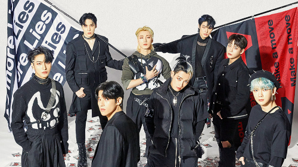

About Me
I am Matilda Knight, a singer and creative in New Orleans, Louisiana. I am currently a Music Industry student at Loyola University of New Orleans. I will be graduating in 2024 and am wanting a career in the entertainment industry, organizing and planning events.
Biography
Matilda Knight is a singer and music enthusiast from New Orleans, Louisiana. She grew up surrounded by all genres and styles of music which only grew as she got older. In the fall of 2020 she started her degree at Loyola University of New Orleans in Popular and Commercial Music Industry Studies. Here she learned how to perfect her vocal skills, but also learned the ins and outs of the music business; from working with other musicians to booking venues and managing artist revenue. She has developed a passion for K-Pop and has decided to work to improve the relationship between the Korean music industry and the American music industry when it comes to touring and marketing international artists. She will be doing a study abroad program in South Korea working alongside the professional esports team Gen G this summer of 2023. She will gain experience organizing large events and live streaming.
Resume
Work Experience
- Dog Walking
- Animal sitting (dogs and cats)
- Barista at PJ's Coffee
- Assistant Manager at PJ's Coffee
College Courses
- Music Theory I,II,III
- Piano I, II
- Piano for Popular Music
- Artist Health and Wellness
- Digital Audio Production
- Intro to Music Industry
- Management
- Internet Technologies
Inspiration
Artists
- Monsta X
- ATEEZ
- Wonho
Monsta X is a K-Pop group that debuted in 2015 through the company Starship entertainment. They have a very edgy sound, for the most part with a dance pop and electro pop feel. Their video and sound concepts are rough and sexual.
ATEEZ is a K-Pop group that debuted in 2018 through KQ Entertainment. Their music is upbeat and centered in the genres of hip hop, dance pop and EDM. Their concepts are usually colorful with intense dance performances.
Wonho is a solo K-Pop idol that first debuted in the group Monsta X, but made his solo debut in 2020 after leaving the group. His song Open Mind was one of the first K-Pop songs and music videos that sparked my interest in K-Pop. His concepts cover a wide range of vibes from sexy to cute. His music is mostly mellow and lovey dovey, but his single tracks or hit songs are more Dance Pop and EDM with heavy bass lines.
Music Videos
I have chosen one of my favorite Monsta X music videos for their song "Beautiful Liar". This music video is my favorite because of the camera work, unique settings, costumes, and editing quality. The dance scenes are some of the best sections of K-Pop music videos specifically because of the camera movement. The lighting and stage design compliments the members outfits and draws attention to them very well.
This next music video is for Wonho's song "Blue". It is more dance centered, but has a colorful and fun concept which is different from many of his other music videos. Wonho is known for being very fit and having a nice body, so that is always featured in his music videos. He is also known for being a strong dancer, so it is not surprising that his music videos are focused more on the dance routines.
Contact Me
Email: matilda.knight23@gmail.com
Phone: (504) 858 4941